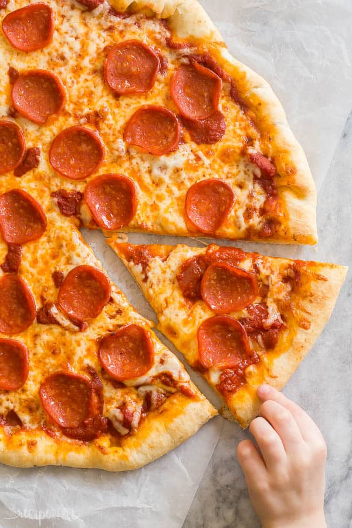

DESCRIPTION
This is a simple pizza recipe.Easy to make at home with available ingredients.
Are you looking for a tasty treat the will definitely put other pizzas to shame??You are definitely in luck.
This is a great recipe when you don't want to wait for the dough to rise. You just mix it and allow it to rest for 5 minutes and then it's ready to go! It yields a soft, chewy crust.
The recipe is beginner friendly.With use of simple and common ingredients you will be able to make it in 45minutes.
It is an amazing snack for watchin a game or a movie.let us get into the ingredients.
INGREDIENTS
- 1 tablespoon fast rise yeast
- 1 teaspoon white sugar
- 2 1/2 cups bread flour
- 1 teaspoon salt
- 1 cup warm water (/45 degrees Celcius)
- 2 tablespoons olive oil
TOPPINGS
- 1/4 cup tomato sauce
- 1/2 teaspoon garlic powder
- 1/2 teaspoon salt
- 1/8 teaspoon pepper
- 1 1/2 cups pepperoni slices
- 1 cup shredded mozzzarella cheese
- 3 tablespoons grated parmsan cheese
STEPS
- In a large bowl,mix first 4 ingredients.
- Mix water and oil;add to flour mixture.
- Turn onto floured surface;knead for 2 minutes.
- Place in a greased bowl;turning to grease top.
- Cover and let rise for 20 minutes.
- Punch down;place on 12in,greased pizza pan.
- Pat into a circle
- Topping: Mix first 5 ingredients and spread over crust.
- Put a few pepperoni slices on top of sauce.
- Sprinkle with 1/2 the mozzeralla ;1/2 the monterey jack and 1/2the parmesan.
- Put the rest of the pepperoni on
- Repeat at 400* for 20 minutes or until light brown.
Go back to the homepage.
return to the top